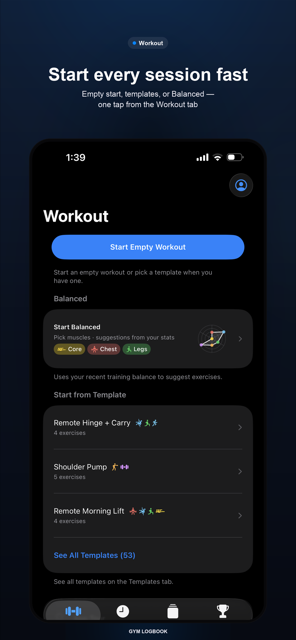
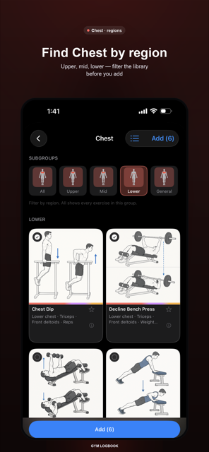
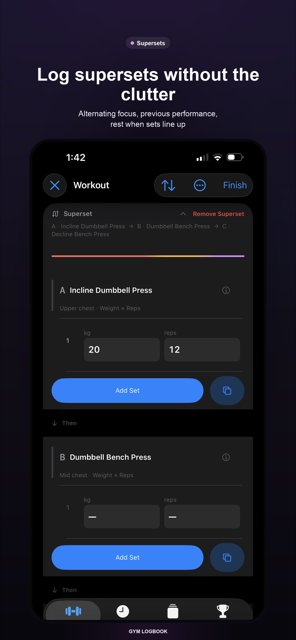
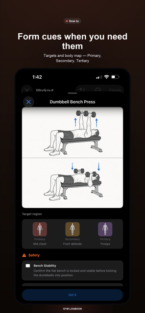
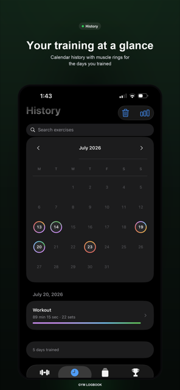
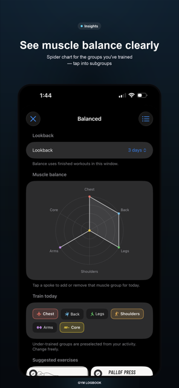
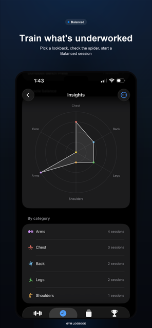

Gym Logbook
Log a set in two taps. Track personal records and estimated 1RM automatically. See exactly which muscles are lagging — and train them next. Works with no signal.
Requires iOS 17 or later. No account needed to start.
Every screen is shaped by one question: how many taps does this cost between sets?
Wheel pickers sized for a phone held in one hand. Duplicate your last set in a single tap, or apply what you did last time and adjust from there.
Local-first with auto-save. An in-progress workout survives a phone call, a dead battery, or a basement with no bars of signal.
Last time's weight and reps sit right under the set you're about to log, with a one-tap Apply — no digging through history mid-set.
Countdown or stopwatch on the Lock Screen and Dynamic Island, with +15s and Stop where your thumb already is. Rest is logged with the set.
Swipe to browse.







Most logs tell you what you did. This one tells you what you've been avoiding. Pick a lookback window — a week, a month, whatever you like — and the spider chart shows how your training actually distributed across muscle groups. Tap into a group to see its subgroups.
Balanced sessions turn that into a workout: choose an under-trained muscle and get ranked suggestions, including supersets, built from what you've actually been lifting.
Interface and exercise catalog, not machine-translated at runtime.